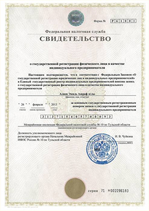

<!DOCTYPE html>
<html lang="ru">
  <head>
    <meta charset="utf-8">
    <meta name="viewport" content="width=1200, initial-scale=1">
    <meta name="format-detection" content="telephone=no">
    <link rel="icon" href="favicon.ico" type="image/x-icon">
    <link rel="shortcut icon" href="favicon.ico" type="image/x-icon">
    <title>Группа компаний Лом-АКБ - утилизация аккумуляторов</title>

    <link rel="stylesheet" href="css/main.css">
  </head>
  <body>

    <div class="site-wrapper">
      <header class="site-header">
        <a href="index.html" class="logo">
          <small>Группа компаний</small>
          <strong>Лом-АКб</strong>
          <span>Утилизация аккумуляторов</span>
        </a>
        <nav class="header-nav">
          <ul>
            <li><a href="purchase-prices.html">Закупочные цены</a></li>
            <li><a href="service-stations.html">Пункты приема</a></li>
            <li><a href="catalog.html">Новые аккумуляторы</a></li>
            <li><a href="contacts.html">Контакты</a></li>
          </ul>
        </nav>
        <div class="header-contacts">
          <a href="modals/call-req.html" class="btn-call-req js-fancybox-modal">Заказать звонок</a>
          <span class="phone">+7 (916) 073-95-95</span>
          <span class="alt-phone">+7 (499) 650-52-09</span>
        </div>
      </header>
      <main class="site-content">
        <section class="our-contacts">
          <h2 class="block-title">Контакты</h2>
          <div class="block-body">
            <p>Желаете получить подробную информацию о ценах и условиях приёма АКБ, особенностях утилизации отходов? Свяжитесь с нашими специалистами, используя указанную ниже контактную информацию, отправьте нам сообщение, используя форму на сайте, или закажите обратный звонок.</p>
            <h3>+7 (916) 073-95-95<br>+7 (499) 713-65-95<small>или закажите обратный звонок</small></h3>
          </div>
        </section>
        <ul class="contacts-shedule">
          <li>
            <p><strong>Москва, 1-й Грайвороновский пр., 4</strong><br><a href="mailto:info@priem-akkumulyatorov.ru">info@priem-akkumulyatorov.ru</a></p>
          </li>
          <li>
            <p>+7 (916) 073-95-95<br>+7 (499) 650-52-09</p>
          </li>
          <li>
            <p>Без выходных<br>с 10:00 до 21:00</p>
          </li>
        </ul>
      </main>
      <section class="application-req">
        <form action="">
          <div class="form-group">
            <label for="" class="sr-only"></label>
            <input type="text" class="form-control" placeholder="Имя">
          </div>
          <div class="form-group">
            <label for="" class="sr-only"></label>
            <input type="text" class="form-control" placeholder="Телефон">
          </div>
          <button type="submit" class="btn-send-req">Отправить заявку</button>
        </form>
      </section>
      <section class="entrepreneur-certificate">
        <div class="row">
          <div class="col image-col">
            
          </div>
          <div class="col content-col">
            <p><span class="text-uppercase"><strong>Группа компаний «Лом-АКБ»</strong></span><br>(индивидуальный предприниматель Эмиль Алиев).</p>
            <p>Основной деятельностью ГК является реализация автомобильных аккумуляторных батарей в сети Интернет. Кроме того, мы оказываем крупным организациям, специализирующимся на утилизации отходов(отработанных АКБ и свинцового лома) агентские услуги по привлечению клиентов.</p>
            <p>Группа компаний «Лом-АКБ», взаимодействуя с другими специализированными предприятиями и работая с оптовыми объёмами, позволяет своим клиентам быстро и выгодно реализовывать аккумуляторные батареи и лом.</p>
          </div>
        </div>
      </section>
      <footer class="site-footer">
        <a href="index.html" class="logo">
          <small>Группа компаний</small>
          <strong>Лом-АКб</strong>
          <span>Утилизация аккумуляторов</span>
        </a>
        <span class="copyrights">Лом-Акб © 2013—2015</span>
      </footer>
    </div><!-- /.site-wrapper -->

    <script src="js/vendor.js"></script>

    <script src="js/plugins.js"></script>

    <script src="http://api-maps.yandex.ru/2.1/?lang=ru_RU"></script>

    <script src="js/main.js"></script>
</body>
</html>
